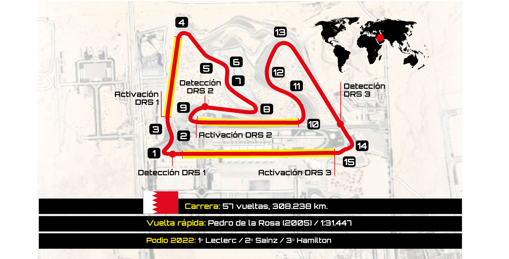
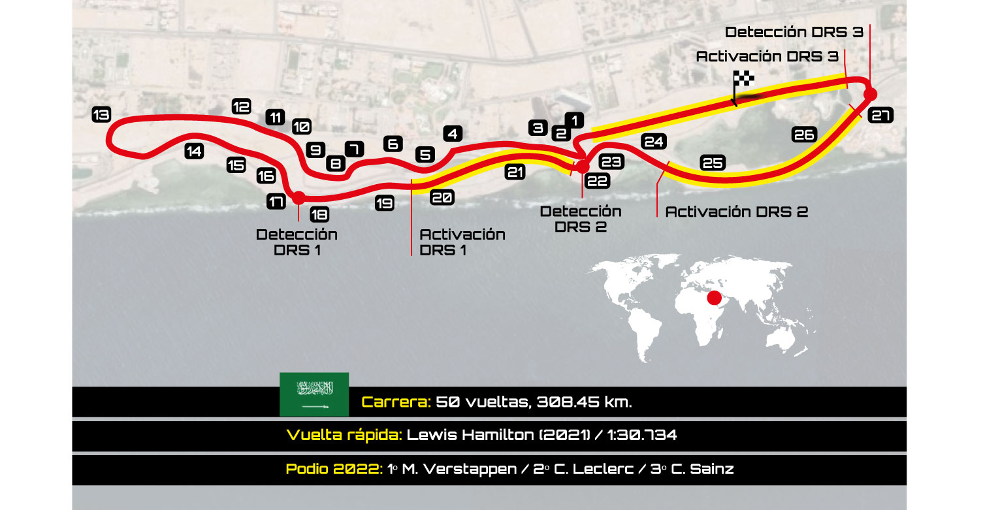
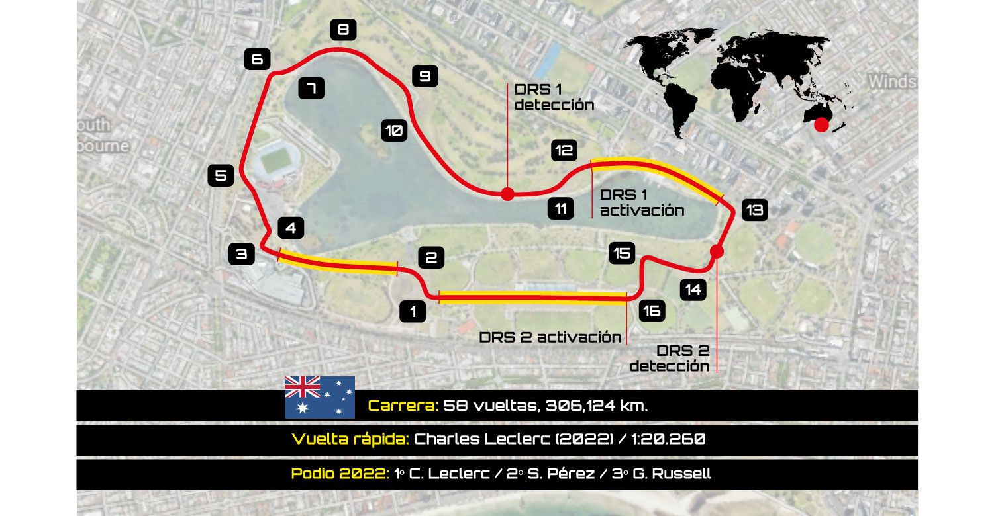
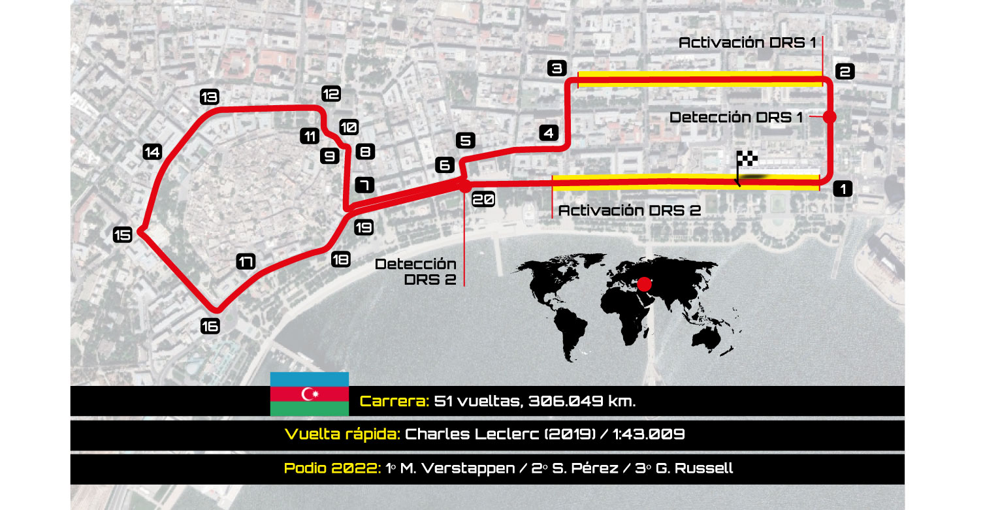
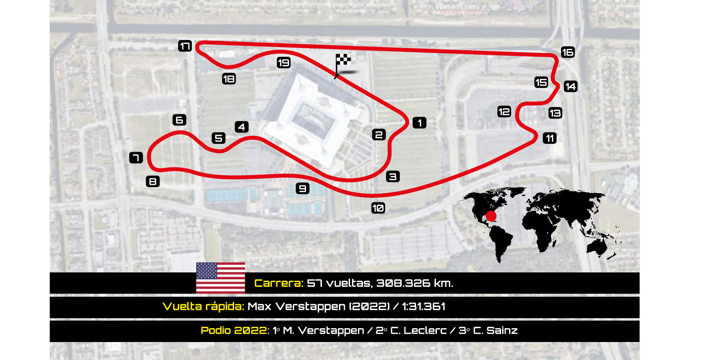
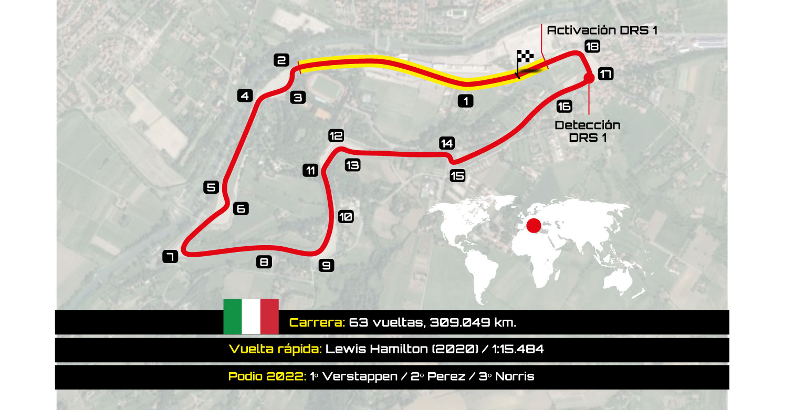
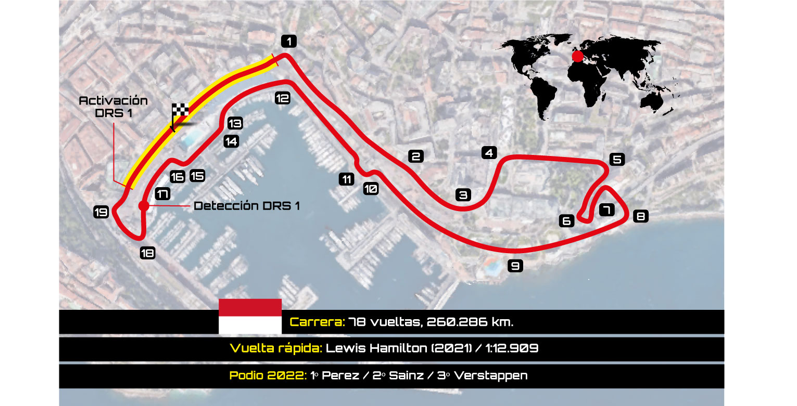

- 1. GRAN PREMIO DE BAHREIN
- BAHREIN INTERNATIONAL CIRCUIT
- Del 3 al 5 de marzo
- 
- 2. GRAN PREMIO DE ARABIA SAUDÍ
- JEDDAH CORNICHE CIRCUIT
- Del 17 al 19 de marzo
- 
- 3. GRAN PREMIO DE AUSTRALIA
- MELBOURNE GRAND PRIX CIRCUIT
- Del 31 de marzo al 2 de abril
- 
- 4. GRAN PREMIO DE AZERBAIJAN
- BAKU CITY CIRCUIT
- Del 28 al 30 de abril
- 
- 5. GRAN PREMIO DE MIAMI
- MIAMI INTERNATIONAL AUTODROME
- Del 5 al 7 de mayo
- 
- 6. GRAN PREMIO DELLE'EMILIA ROMAGNA
- AUTODROMO ENZO E DINO FERRARI
- Del 19 al 21 de mayo
- 
- 7. GRAN PREMIO DE MÓNACO
- CIRCUITO DE MÓNACO
- Del 26 al 28 de mayo
- 
CIRCUITOS F1 2023